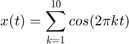
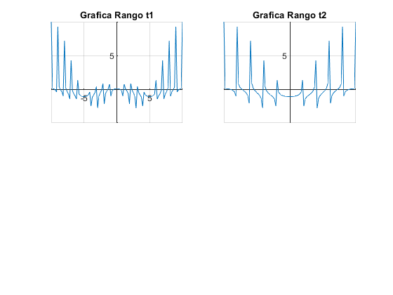
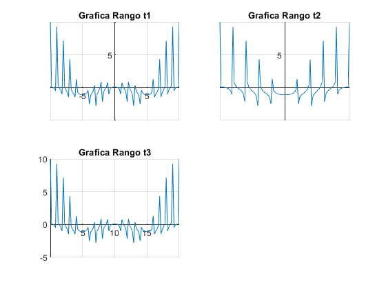
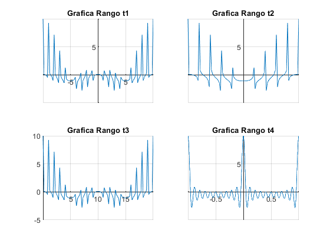

PROBLEMA 4
Contents
Se resolvio y grafico una sumatoria por medio de MATLAB y paython, la sumatoria es:

MATLAB
Se construyeron 4 graficas para 4 diferentes rangos de "t"
Subgráfico 1
Para el rango t1
t1 = linspace(-10,10,100); % Rango 1 de -10 a 10 de 1 en 1 x1 = linspace(0,0,100); for k = 1:10 x1= x1 + cos(2*pi*t1*k); end subplot(2, 2, 1); plot(t1, x1); title("Grafica Rango t1") plano= gca; plano.XAxisLocation = "origin"; plano.YAxisLocation = "origin"; plano.Box = "off"; grid on;

Subgráfico 2
Para el rango t2
t2 = linspace(-5,5,100); % Rango 2 de -5 a 5 de 1 en 1 x2 = linspace(0,0,100); for k = 1:10 x2= x2 + cos(2*pi*t2*k); end subplot(2, 2, 2); plot(t2, x2); title("Grafica Rango t2") plano = gca; plano.XAxisLocation = "origin"; plano.YAxisLocation = "origin"; plano.Box = "off"; grid on
Subgráfico 3
Para el rango t3
t3 = linspace(0,20,100); % Rango 3 de 0 a 20 de 1 en 1 x3 = linspace(0,0,100); for k = 1:10 x3= x3 + cos(2*pi*t3*k); end subplot(2, 2, 3); plot(t3, x3); title("Grafica Rango t3") plano = gca; plano.XAxisLocation = "origin"; plano.YAxisLocation = "origin"; plano.Box = "off"; grid on
Subgráfico 4
P+ara el rango t4
t4 = linspace(-1, 1, 1000); % Rango 4 de -1 a 1 con 1000 elementos x4 = linspace(0,0,1000); for k = 1:10 x4= x4 + cos(2*pi*t4*k); end subplot(2, 2, 4); plot(t4, x4); title("Grafica Rango t4") plano = gca; plano.XAxisLocation = "origin"; plano.YAxisLocation = "origin"; plano.Box = "off"; grid on
PAYTHON
Programar graficas en paython es muy similar a graficae en MATLAB como se puede obserbar en la imagen del codigo

De esta forma es como se observan las graficas en python